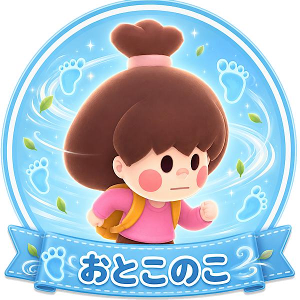

「混雑をすり抜ける機動力」タイプ
あなたは、人が多い場所や狭い場所でも、自分のルートを見つけて動けるタイプ。
混雑していてもただ止まるのではなく、「どう抜ければ早いか」を考えながら動けます。
テンポよく仕事を進めたい気持ちが強く、渋滞やぶつかり合いをうまく避けたい人です。
少しテクニカルでも、慣れて使いこなすことに楽しさを感じます。
おとこのこは、移動中に他プレイヤーや一部の虫との接触を避けられるスキルを持っています。
狭いキッチンや人が行き交う導線で、うまく使うとかなり快適に動けます。
発動には少し慣れが必要ですが、使いこなせると混雑に強いキャラになります。
テキパキ動きたいあなたと相性の良い、機動力重視のキャラです。